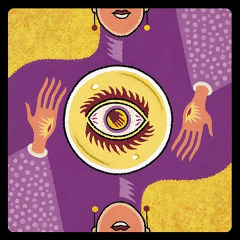

Loup Garou Ultime
| Rôle | Pouvoir |
|---|---|

|
Loup Garou Ultime
Chaque nuit (sauf la première), choisissez un joueur. Il meurt. Note:
Vous pouvez choisir de vous tuer vous même et l'infect loup garou ou le
grand loup jouera votre rôle.
Autres Infos
Le loup garou ultime prend connaissance d'un rôle de villageois qui
n'est pas présent dans la partie afin de pouvoir se faire passer pour
celui-ci.
Conseil: ciblez les personnages qui acquièrent de l'information
(voyante, enfant sauvage, cupidon) et évitez de mordre l'ancien.
|
|
Infect Loup Garou
Chaque nuit, choisissez un joueur. Ce joueur est empoisonné et ne
bénéficie plus de son pouvoir jusqu'au début de la prochaine nuit.
Autres Infos
Le loup garou infect prend connaissance d'un rôle de villageois qui
n'est pas présent dans la partie afin de pouvoir se faire passer pour
celui-ci.Le poison annule ou altère les pouvoirs des villageois. Si un villageois faisant l'acquisition d'informations pendant la nuit (petite fille, voyante, loup blanc,...) est empoisonné alors le conteur peut altérer (ou non) les informations selon son choix. Si un villageois ayant un pouvoir non lié à la prise d'information (chasseur, ancien, chevalier, flûtiste) alors son pouvoir sera annulé sans qu'il le sache. Conseil: de bonnes cibles pour l'empoisonnement sont Cupidon, la voyante, l'ancien ou le chevalier dont les pouvoirs vous gêneront amplement. |
|
|
Grand Loup Garou
S'il y a toujours plus de 5 joueurs en vie et que le loup garou ultime
meurt, vous devenez le loup garou ultime.
Autres Infos
Le grand loup garou prend connaissance d'un rôle de villageois qui n'est
pas présent dans la partie afin de pouvoir se faire passer pour
celui-ci.
|
|

|
Petite Fille
Lors de la première nuit, le maître du jeu vous montrera un rôle de
villageois puis pointera deux joueurs. L'un de ces deux joueurs est le
villageois précédemment montré.
Autres Infos
Conseil: votre pouvoir ne s'applique que lors de la première
nuit. N'hésitez pas à partager au plus vite vos informations.
|
|
Renard
Lors de la première nuit, le maître du jeu vous montrera un rôle de loup
garou (sauf celui du loup garou ultime) puis pointera deux joueurs. L'un
de ces deux joueurs est le loup garou précédemment montré.
Autres Infos
Conseil: votre pouvoir ne s'applique que lors de la première
nuit. N'hésitez pas à partager au plus vite vos informations.
|
|

|
Loup Blanc
Lors de la première nuit, vous découvrez combien de loup garous sont
placés côte à côte.
Autres Infos
Conseil: votre pouvoir ne s'applique que lors de la première
nuit. N'hésitez pas à partager au plus vite vos informations.
|

|
Cupidon
Chaque nuit, parmi les deux joueurs vivants qui vos entourent,
vous apprenez combien de loup garous vous entourent (0, 1 ou 2).
Autres Infos
Conseil: votre pouvoir s'applique chaque nuit et vous serez
probablement une cible pour le loup garou ultime. Votre discrétion peut être un atout pour ne pas tenter sa morsure. |
|  |
Voyante
Chaque nuit, choisissez deux joueurs. Si au moins l'un deux est le loup
garou ultime, vous aurez l'information.
ATTENTION: l'un des villageois est un leurre et vous apparaîtra
comme le loup garou ultime !
Autres Infos
Conseil: votre pouvoir s'applique chaque nuit et vous serez
probablement une cible pour le loup garou ultime. Votre discrétion peut être un atout pour ne pas tenter sa morsure. |

|
Chevalier
Chaque nuit (sauf la première), choisissez un autre personnage, celui-ci
est protégé du loup garou ultime le temps d'une nuit.
Autres Infos
Conseil: votre pouvoir peut être précieux pour des personnages
faisant l'acquisition d'information régulièrement ou à pouvoir unique
tels que Cupidon, la voyante ou le chasseur.Essayer vite de les identifier afin de les protéger. |

|
Chasseur
Une fois par partie, pendant la journée, choisissez publiquement un
joueur. Si c'est le loup garou ultime, il meurt.
Autres Infos
Conseil: votre pouvoir ne se réalise qu'une seule fois donc
essayez de l'utiliser avant de mourir.Même si vous vous trompez, votre cible ne mourra pas et vous saurez que ce n'est pas le loup garou ultime. |

|
Joueur de flûte
Pendant la journée, si un joueur vous désigne pour une exécution et, que
ce joueur est un villageois (à part si c'est l'ange ou s'il est
bourré), alors il est immédiatement exécuté. Ce pouvoir n'est
utlisé qu'une seule fois. ATTENTION: ne dites rien lorsque c'est
le cas. Le maître du jeu interviendra à ce moment précis.
Autres Infos
Conseils: ce pouvoir vous permet de vous protéger des mauvaises
accusations donc n'hésitez pas à l'énoncer si on vous accuse à tort.De même, si quelqu'un vous designe pour une exécution et qu'il n'est pas lui-même exécuté alors vous venez probablement de déceler un loup garou. À l'inverse, si la personne est executée alors elle est immédiatement innocentée. |
|
Sorcière
Si vous mourrez la nuit, vous choisissez un personnage et découvrez son
identité.
Autres Infos
Conseil: votre pouvoir se déclenche à votre mort. Donc n'hésitez
pas à vous faire passer pour un personnage en possession d'informations
afin d'attirer la morsure du loup garou. Si vous vous faites éliminer
par le village, votre pouvoir ne se déclenchera pas.
|
|

|
Ancien
Le loup garou ultime ne peut pas vous tuer.
Autres Infos
Conseil: votre pouvoir vous permet d'annuler la morsure du loup
garou ultime pendant une nuit. N'hésitez pas à vous faire passer pour une proie du loup garou ultime (en prétendant d'avoir de précieuses informations) afin qu'il s'en prenne à vous la nuit. |

|
Enfant Sauvage
Si un joueur est executé par le village durant la journée, vous
découvrez son identité la nuit.
Autres Infos
Conseil: votre pouvoir se déclenche uniquement après
l'exécution du jour donc n'hésitez pas à déclencher des
nominations/exécutions pour innocenter/accuser quelqu'un.
|

|
Ange
Si le village vous élimine, le village perd la partie.
Autres Infos
Conseil: votre personnage peut vous protéger de fausses
accusations en révélant votre rôle. Donc n'hésitez à l'énoncer pour vous
protéger.
|